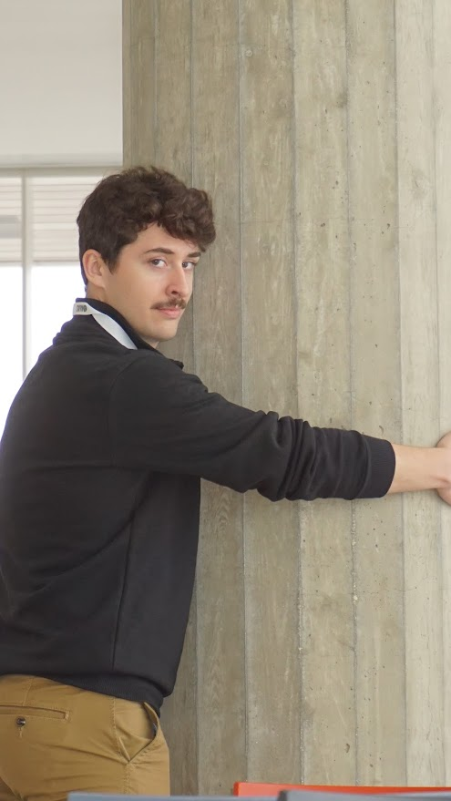

|  | Welcome to the personal website of Jack Walsh. Jack is a man whose goal is to create. Originally from the Phoenix area, Jack and his family moved to Pierre, SD, at a very early age. Ever since Jack has been around, he has always had a passion for making. This love for making soon moved into technology where Jack began to create on the digital plane. Jack’s love for creativity spans further than just architecture. He has picked up an interest in video games development and website design. Jack is currently a masters student at South Dakota State University pursuing his masters in architecture. In the past four years of architecture school, Jack has learned plenty of valuable skills. One example of a learned skill would be leadership. Unexpectedly, Jack was placed in charge of a studio group of nine students acting as his firm. Not only was leadership a factor, but Jack had to adapt to nine different minds and how they worked with one another. Jack’s management and design skills were put to the test during this project. Jack has also furthered his design skills with a deeper understanding of architectural space and design purpose. Jack has been nothing short of involved in his school's curriculum. Jack served as a member of the South Dakota State University American Institute of Architectural Students (AIAS) as the Secretary while also serving as Co-coordinator on the school’s Student Advisory Board (SAB). Jack also presented with the Urban Revival Group (Aliyah Immeker, Tylan Bear, and Grady O’Niell) In New Orleans at the AIAS National Forum and to the AIA South Dakota executive board. Jack aims to better his connection with his students and faculty as well as develop his own design identity. |